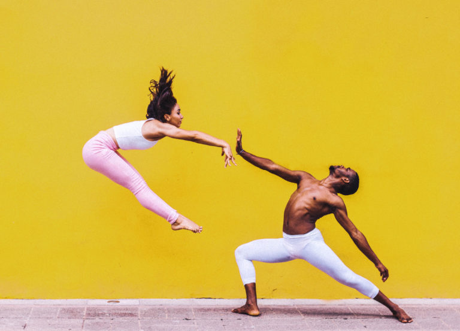

DANZA CONTEMPORANEA

La danza contemporánea consiste en explorar el movimiento libre del cuerpo con énfasis en la emoción, la fluidez y la conexión con el suelo. Los bailarines no siguen pasos estrictos, sino que improvisan, utilizan respiración, peso corporal, caídas y recuperaciones para expresar ideas o sentimientos. Es muy usada en teatro, performance y piezas artísticas modernas.